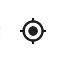

<style>
.my_pos_img {
    -webkit-border-radius: 30px;
    -moz-border-radius: 30px;
    width: 60px;
    position: absolute;
    top: calc(50% - 60px);
    left: calc(50% - 27px);
    z-index: 2;
}
</style>

<ons-navigator title="Navigator" var="homeNavigator">
    <ons-page>
        <ons-toolbar fixed-style>
            <!--
            <div class="left" style="line-height: 44px">
                
            </div>
            -->
            <div class="center">
                
            </div>
            <div class="right" style="line-height: 44px">
                <ons-toolbar-button ng-click="menu.toggleMenu()">
                	<ons-icon icon="ion-navicon" style="font-size: 32px; width: 1em;"></ons-icon>
        		</ons-toolbar-button>
            </div>
        </ons-toolbar>

        <div id="map"></div>

        
    </ons-page>
    
    <ons-template id="alert-dialog.html">
        <ons-alert-dialog var="alertDialog">
            <div class="alert-dialog-title">
                <strong style="color: #ff3333" id="alertDialogTitle">定位失敗!</strong>    
            </div>
            <div class="alert-dialog-content">
                <span id="alertDialogText">請確定已開啟GPS功能，並重新嘗試</span>
            </div>
            <div class="alert-dialog-footer">
                <button class="alert-dialog-button" onClick="location.reload()">OK</button>
            </div>
        </ons-alert-dialog>
    </ons-template>

</ons-navigator>

<script>

var map;
var directionsDisplay;
var directionsService = new google.maps.DirectionsService();

ons.ready(function() {
    setTimeout(function() {
        
        $("#event_div").show();
        
        menu.setSwipeable(false);
        
        /*
        var _h = $( document ).height();
        _h = _h / 2 - 30;
        $(".my_pos").css("top", _h - 30);
        console.log("test 0 ==> _h("+_h+")");
        
        var _w = $( document ).width();
        console.log("test 1 ==> _w("+_w+")");
        _w = _w / 2 - 30;
        console.log("test 2 ==> _w("+_w+")");
        $(".my_pos").css("left", _w + 3);
        */
    }, 10);
});

$(function(){

    isFirstTime = true;

    var options = {
      enableHighAccuracy: true,     // 高精度定位
	  timeout: 10000,               // 10秒 timeout
	  maximumAge: 3 * 60 * 1000     // 暫存3分鐘
	};
	
	function success(pos) {
	  
        //var crd = pos.coords;
	    //console.log('Your current position is:');
	    //console.log('Latitude : ' + crd.latitude);
	    //console.log('Longitude: ' + crd.longitude);
	    //console.log('More or less ' + crd.accuracy + ' meters.');

	    init(pos);
        HoldOn.close();

        if(window.localStorage.getItem("f1") == null) {
            alert("won test1");
        } else if(window.localStorage.getItem("f1") == "") {
            alert("won test2");
        } else {
            alert("won test3 ==>" + window.localStorage.getItem("f1"));
            tabbar.setActiveTab(1);
        }
	};
	
	function error(err) {
	    
        console.warn('ERROR(' + err.code + '): ' + err.message);
        ons.createAlertDialog('alert-dialog.html').then(function(alertDialog) {
            alertDialog.show();
        });       
	};

	navigator.geolocation.getCurrentPosition(success, error, options);
});
	

function init(position) {
    
    var pos_lat = position.coords.latitude;
    var pos_lng = position.coords.longitude;
  
    var latlng = window.localStorage.getItem("marker_center");
    //console.log("latlng("+latlng+")");
    if(latlng != "" && latlng != null) {
       
        var temp = latlng.split(",");
        pos_lat = temp[0];
        pos_lng = temp[1];
        
        window.localStorage.setItem("marker_center", "");  // 只用一次 
    }
    //console.log("pos_lat("+pos_lat+") pos_lng("+pos_lng+")");

	var infowindow = new google.maps.InfoWindow({
		content: "",
        disableAutoPan: true
	});

	// Init map
	map = new google.maps.Map($('#map').get(0), {
		center: {lat: parseFloat(pos_lat), lng: parseFloat(pos_lng)},
		zoom: 19,
		mapTypeControl: false,
		streetViewControl: false,
	});
    
    // 路徑導航
    var rendererOptions = {
        map: map,
        suppressMarkers : true
    }
    directionsDisplay = new google.maps.DirectionsRenderer(rendererOptions);
    directionsDisplay.setMap(map);
    /*
    // 路徑
    poly = new google.maps.Polyline({
        strokeColor: '#000000',
        strokeOpacity: 1.0,
        strokeWeight: 3
    });
    poly.setMap(map);
    */
  
    // 返回中心點
    var centerControlDiv = document.createElement('div');
    var centerControl = new CenterControl(centerControlDiv, map, position);
    centerControlDiv.index = 1;
    map.controls[google.maps.ControlPosition.RIGHT_BOTTOM].push(centerControlDiv);
  
  
    var markerImage = new google.maps.MarkerImage('images/blue.png?123',
                new google.maps.Size(80, 80),
                new google.maps.Point(0, 0),
                new google.maps.Point(40, 40));

    // 自已的座標 
	var marker = new google.maps.Marker({
		position: {lat: position.coords.latitude, lng: position.coords.longitude},
		map: map,
        icon: markerImage,
        zIndex: 0
	});

	var markers = {};
	map.addListener('bounds_changed', function(){

		var bounds = map.getBounds();
		var center = map.getCenter();
		//console.log("lat("+center.lat()+") lng("+center.lng()+")");
        window.localStorage.setItem("center", center.lat()+","+center.lng());

		var corner = bounds.getNorthEast();
		var radius = GeoFire.distance([center.lat(), center.lng()], [corner.lat(), corner.lng()]);

        if(isFirstTime == true) {
    	
            isFirstTime = false;

			geoQuery.on('key_entered', function(key, location, distance) {

                var location = new google.maps.LatLng(location[0], location[1]);
                //console.log("lat("+location.lat()+") lng("+location.lng()+")");

                //areas.child(key).child("appointment").once('value', function(snapshot) {
                areas.child(key).once('value', function(snapshot) {
                    
                    //console.log("lat("+location.lat()+") lng("+location.lng()+")");

                    var appointment = snapshot.val().appointment;
                    //console.log("appointment("+appointment+")");
                    var d = new Date();
            		var current_time = d.getTime();
                    var diff = appointment - current_time;
                    //console.log("diff("+diff+") appointment("+appointment+") current_time("+current_time+")");
                    
                    var image;
                    var minutesDifference = Math.floor(diff/1000/60);
                    //console.log("minutesDifference("+minutesDifference+")"); 
                    ///marker_yellow
                    
                    var facebook_id = window.localStorage.getItem("facebook_id");
                    //console.log("facebook_id("+facebook_id+")("+snapshot.val().fb_id+")");
                    if(snapshot.val().fb_id == facebook_id)     image = "images/marker_yellow.png";
    				else if(minutesDifference <= 10)            image = "images/marker_red.png";
                    else                                        image = "images/marker_green.png";

    				markers[key] = new google.maps.Marker({
    					position: location,
    					map: map,
    					icon: image
    				});

                    if(snapshot.val().fb_id == facebook_id) {
                        
                        var destination = snapshot.val().destination;    // 目的地
    					var timestamp = snapshot.val().appointment;		// 共乘時間
    					var purpose = snapshot.val().purpose;			// 共乘目的
    					var d = new Date(timestamp);
    					var time_text = getTimeStr(d); //d.toLocaleString();
    
    					var text = "";
                        text += "<div>目的地："+destination+"</div>";
    					text += "<div>共乘時間："+time_text+"</div>";
    					text += "<div>共乘目的："+purpose+"</div>";
                        text += "<div>more..</div>";

                        window.localStorage.setItem("info_key", key);

    					infowindow.setContent("<div onClick='openInfo()' style='width:200px;min-height:40px; z-index:3;'>"+text+"</div>");
    					infowindow.open(map, markers[key]);
                    }
                    
                    markers[key].addListener('click', function() {

        				areas.child(key).once('value', function(snapshot) {

    						//console.log(snapshot.val());
    						var destination = snapshot.val().destination;	// 目的地
    						var timestamp = snapshot.val().appointment;		// 共乘時間
    						var purpose = snapshot.val().purpose;			// 共乘目的
    						var d = new Date(timestamp);
    						var time_text = getTimeStr(d); //d.toLocaleString();
    
    						var text = "";
                            text += "<div>目的地："+destination+"</div>";
    						text += "<div>共乘時間："+time_text+"</div>";
    						text += "<div>共乘目的："+purpose+"</div>";
                            text += "<div style='float:right;'>more..</div>";
    
                            window.localStorage.setItem("info_key", key);
    
    						infowindow.setContent("<div onClick='openInfo()' style='width:200px;min-height:40px; z-index:3;'>"+text+"</div>");
    						infowindow.open(map, markers[key]);

                            var start = new google.maps.LatLng(snapshot.val().latitude, snapshot.val().longitude);
    		                var end = new google.maps.LatLng(snapshot.val().d_latitude, snapshot.val().d_longitude);
			                calcRoute(start, end);

                            ga('send', 'event', '首頁', 'click', "圖標");
    					});
    				});
                });
			});

			//remove marker, un-highlight
			geoQuery.on('key_exited', function(key, location, distance) {

				markers[key].setMap(null);
				delete markers[key];
			});
		}

        if(isFirstTime == false) {

			geoQuery.updateCriteria({
				center: [ center.lat(), center.lng() ],
				radius: radius,
		    });
        }
	});
}

function openInfo() {

    //$('.my_pos').hide();
    ga('send', 'event', '首頁', 'click', '共乘泡泡');
    homeNavigator.pushPage("page1_info.html", {animation: 'slide'});
}

function CenterControl(controlDiv, map, position) {

  // Set CSS for the control border.
  var controlUI = document.createElement('div');
  controlUI.style.cursor = 'pointer';
  controlUI.style.marginRight = '8px';
  controlDiv.appendChild(controlUI);

  // Set CSS for the control interior.
  var controlText = document.createElement('div');
  controlText.innerHTML = '';
  controlUI.appendChild(controlText);

  // Setup the click event listeners: simply set the map to Chicago.
  controlUI.addEventListener('click', function() {
    map.setCenter({lat: position.coords.latitude, lng: position.coords.longitude});
  });
}

// 路徑導航
function calcRoute(start, end) {
/*
    if(directionsDisplay != null) { 
        directionsDisplay.setMap(null);
        directionsDisplay = null;    
    }

    // 路徑導航
    //directionsDisplay = new google.maps.DirectionsRenderer({suppressPolylines: false});
    directionsDisplay = new google.maps.DirectionsRenderer();
    directionsDisplay.setMap(map);
*/
    var request = {
		origin: start,
		destination: end,
		travelMode: google.maps.DirectionsTravelMode.DRIVING
	};
    /*
	directionsService.route(request, function(response, status) {
		if (status == google.maps.DirectionsStatus.OK) {
			directionsDisplay.setDirections(response);
		}
	});
    */
    
    
    var markerA = new google.maps.MarkerImage('images/icon_up.png',
    	new google.maps.Size(68, 108),
        new google.maps.Point(0, 0),
        new google.maps.Point(17, 47),
        new google.maps.Size(34, 54));
    var markerB = new google.maps.MarkerImage('images/icon_down.png',
		new google.maps.Size(68, 108),
        new google.maps.Point(0, 0),
        new google.maps.Point(17, 54),
        new google.maps.Size(34, 54));
        
    directionsService.route(request, function(response, status) {
    	if (status == google.maps.DirectionsStatus.OK) {
			directionsDisplay.setDirections(response);
			var _route = response.routes[0].legs[0]; 
			pinA = new google.maps.Marker({
				position: _route.start_location,
				map: map,
				icon: markerA
			}),
			pinB = new google.maps.Marker({
				position: _route.end_location,
				map: map,
				icon: markerB
			});
		}
	});

    // 路徑
    /*
    poly.setPath([]);
    var path = poly.getPath();
    path.push(start);
    path.push(end);
    */
}

</script>

<script>
  (function(i,s,o,g,r,a,m){i['GoogleAnalyticsObject']=r;i[r]=i[r]||function(){
  (i[r].q=i[r].q||[]).push(arguments)},i[r].l=1*new Date();a=s.createElement(o),
  m=s.getElementsByTagName(o)[0];a.async=1;a.src=g;m.parentNode.insertBefore(a,m)
  })(window,document,'script','https://www.google-analytics.com/analytics.js','ga');

  ga('create', 'UA-84401162-1', 'auto');
  ga('send', 'pageview', '首頁');
</script>